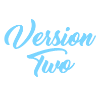

About V3!
- Changed the body,header,footer colors
- Added the Gallery Page and linked/updated all navigation
- Added a flexbox on inded.html to display customer comments
- Created CSS Grid for gallery and made it switch to a flexbox on mobile phones
- Added titles to each gallery image to acknowledge creators of each quilt
- Added a services submenu titled services_binding.html
- Created a table with an example quilt to calculate the cost of binding
- Updated About V3 to reflect new changes and formated in css accordingly

About V2!
- Created resetstyles.css to allow for more resets later if needed
- Created contact.html page
- Edited out old comments and changed styles I no longer liked
- Floated navigation bar to create a horizontal navigation under the header
- Changed list on services page to a dl and changed the parameters
- created images for about page
- Edited V2 to reflect new changes made
About V1!
- Created HTML skeletons in documents styles.css, about.html, services.html, and index.html
- Created images for the headers of each page in adobe photoshop
- Selected colors from WC3Schools to coordinate with header
- Added content on index.html and services.html including headings and unordered/ordered lists
- Started applying styles to different elements on styles.css
- Made comments on previous items created
- Finished adding required additions and validated pages locally
- Uploaded finished V1 project to CIS2 and validated pages remotely
- Brainstormed additions and edits for version two